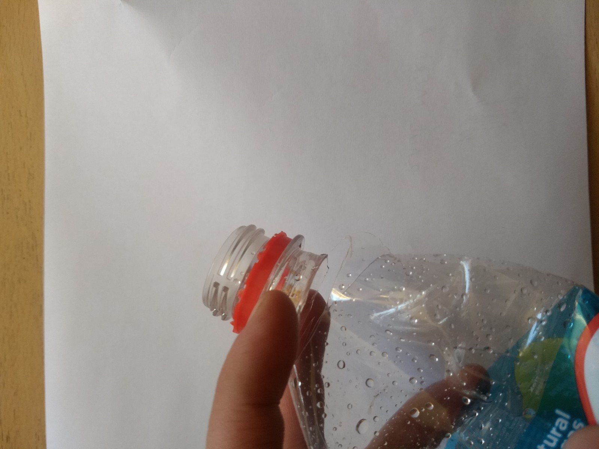
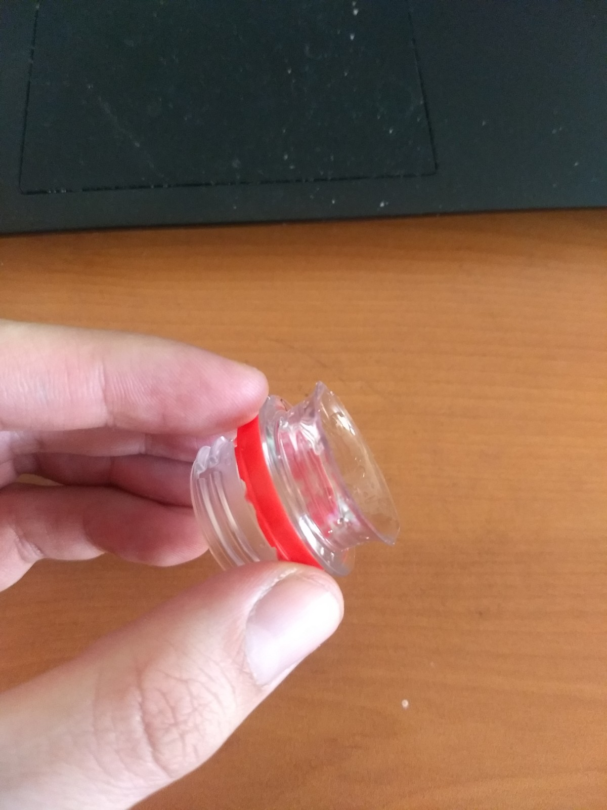
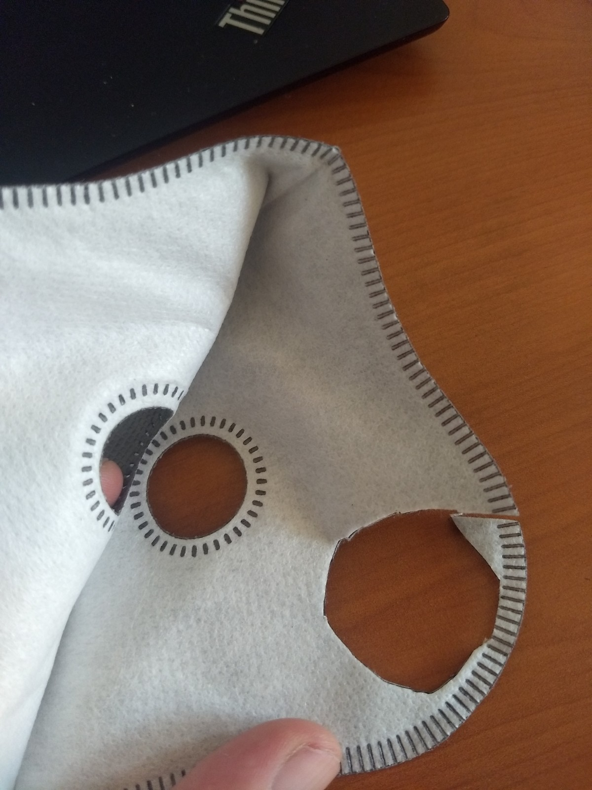
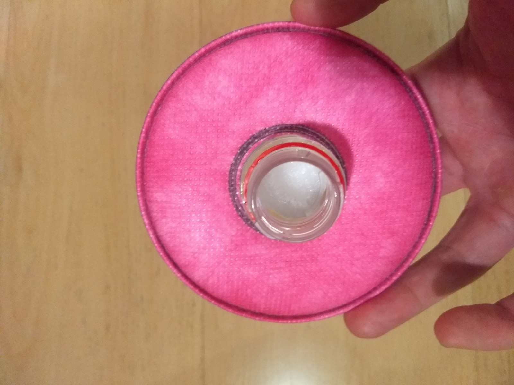
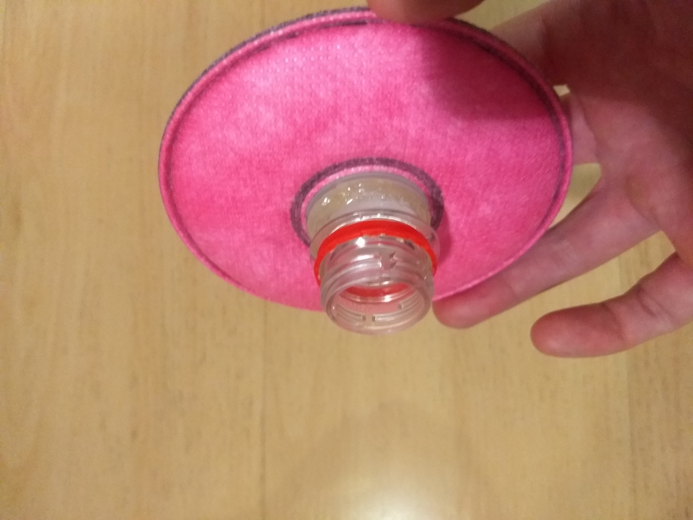
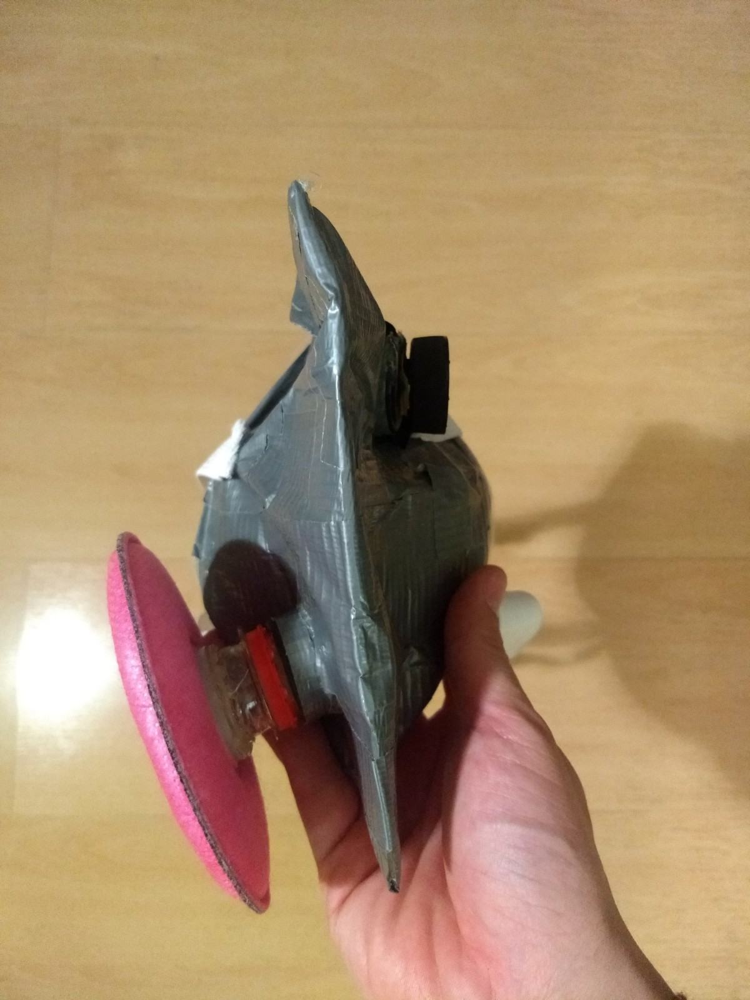
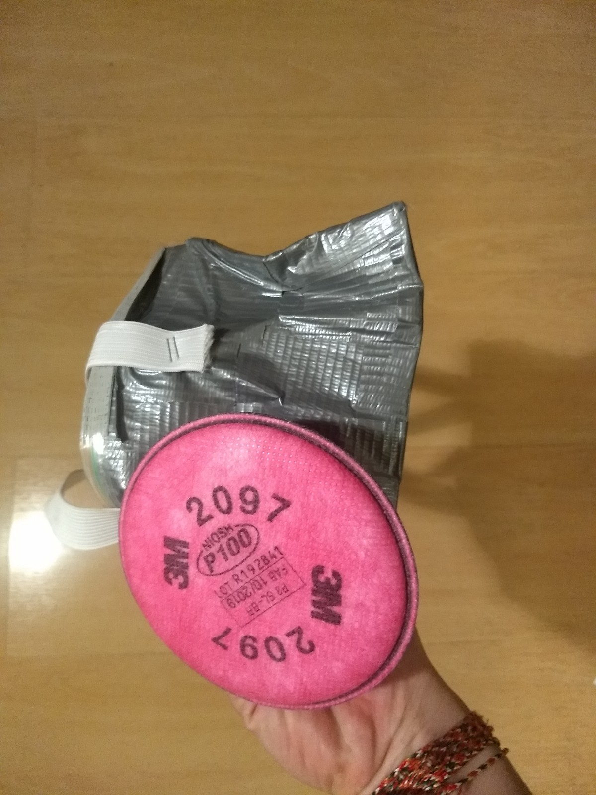

El filtro es una parte crítica de cualquier respirador, y es uno de los puntos de fallo de todo el sistema (la calidad del filtro es un límite superior para la efectividad del respirador, aunque no un límite inferior!)
Quizás más importante, en el caso del respirador mismo, es posible asegurarse de que no existen fugas de aire (intentando inspirar con la articulación del filtro bloqueada), pero es muy difícil, o, imposible, asegurarse de que no existen fugas de aire en el filtro. Por tanto, es vital poner un esfuerzo extra en asegurarse de que todos los componentes estén correctamente sellados.
Materiales
Elección del material filtrante
El sistema modular de los respiradores RA permite utilizar filtros de diferentes materiales, siguiendo la misma técnica para confeccionarlos. Por tanto, es fundamental la pregunta “cuál es la elección óptima para material filtrante?”.
En este trabajo se discuten materiales disponibles para la persona promedio, y su efectividad como filtro. Un filtro para respiradores RA puede tener varias capas de material filtrante (discutiremos un ejemplo con dos capas), por lo que no es preciso elegir una. Sin embargo, dependiendo de la disponibilidad, mis recomendaciones personales (RMA) son las siguientes:
Filtros profesionales P100, por ejemplo, el modelo 2097 de 3M. Esta es la opción óptima, puesto que, si el resto del respirador se fabrica y pone correctamente, se asegura una protección de nivel industrial. La disponibilidad de estos filtros debe ser mayor que la de los respiradores con los que normalmente se ocupan. Sin embargo, es posible que tambien escaseen.
Material de mascarillas quirúrgicas. El material que ha demostrado ser eficaz para prevenir el contagio. Esta solución tiene algunas ventajas por sobre utilizar directamente una mascarilla de tres pliegues:
Entrega una protección superior a de las mascarillas quirúrgicas,
pues el respirador iría sellado contra el rostro y no ingresaría aire contaminado por los costados de la mascarilla, como ocurre con las de tres pliegues.
La válvula disminuye la acumulacion de humedad sobre el material filtrante.
Se requiere una menor cantidad de material filtrante por persona. Una mascarilla quirúrgica debiera producir material para entre 2 y 6 filtros para respiradores RA, dependiendo del tipo (ver abajo).
Filtro contra smog. Al momento de escribir esta instruccion, es posible encontrar filtros de este tipo en sitios como Mercadolibre o Ebay. Estan pensados para reducir a exposicion a material particulado (PM2.5) en ciclistas y otros deportistas urbanos. Mi experiencia personal (que no deberia tomarse como el resultado de un experimento cienfico controlado) es que, al menos los de la marca Basecamp protegen contra particulas de 1 micrometro de diametro que parecen corresponder a la fraccion principal de particulas de aerosol infecciosas. Con el material de uno de estos filtros pueden construirse unos 6 filtros para respiradores RA.
Filtro de material de bolsas de aspiradora. De no contar con material disenado para la proteccion respiratoria, parece razonable utilizar bolsas de aspiradora, que muestran un buen desempeno en el estudio de referencia. Es importante considerar el material de cada bolsa por separado, y descartar posibles toxicidades. Acerca de esto, la marca Miele no recomienda utilizar sus productos para confeccionar mascarillas.
El trabajo recién citado tambien muestra que los “paños de cocina” comunes pueden constituir un material aceptable en caso de faltar algo mejor. En este caso es posible utilizar varias capas del material. Este material presenta inconvenientes para su sellado con respecto a material “liso”. Su estructura filamentosa hace más difícil (pero no imposible!) el sello.
Nota: No tengo ninguna relacion comercial o de otro tipo con 3M, Basecamp o ninguna compania mencionada aqui, salvo la dada por adquirir ocasionalmente sus productos.
Tipos de filtro
Filtro pequeno.
Este filtro es apropiado para utilizar con filtros como el 3M 2097, filtros anti-smog y materal de mascarilla quirurgica. Aunque permite una cantidad relativamente menor de flujo de aire (salvo con un filtro como el 2097), ocupa poco material filtrante, es facil de hacer y requiere pocos materiales ademas del material filtrante mismo:
Una botella plastica de gaseosa o agua mineral.
Silicona liquida y aplicador.
Un cuchillo cartonero u otra hoja afilada.
Lija o similar.
Confeccion:
Cortar la botella cerca del gollete, cuando comienza la curvatura de la botella misma (en esta parte, el plastico es mas delgado y facil de cortar). Lijar.


Si se utiliza material de filtro contra smog, o de mascarilla quirurgica, cortar del material un circulo del mismo radio que el del lado recien cortado de la botella.
Sellar con silicona.

Si se utiliza un filtro como el 2097 de 3M, estos tienen un conector plastico que va al respirador, y que es aproximadamente del mismo diametro que el gollete cortado en el primer paso. Por esta razon, puede sellarse con silicona liquida a la parte recien lijada del gollete.


Este filtro puede atornillarse a un respirador RA (se muestra con un filtro 2097)


Filtro grande
Para otros materiales filtrantes (y, quizas, para material de mascarilla quirurgica) es recomendable un filtro mas grande, que permita mas de una capa de material, y un mayor flujo de aire.
Los materiales requeridos, ademas del material filtrante mismo:
Una botella plástica de refresco (250 ml - 600 ml, aunque en principio pueden utilizarse botellas más grandes)
Cinta americana
Silicona liquida
Aplicador de silicona líquida
Tijeras.
Instrucciones
Cortar la botella en forma perpendicular a su eje más largo. Puede ser preferible cortar algo más lejos del gollete que lo que se ve en la figura, para facilitar el uso de varias capas de material filtrante. Es importante procurar que el corte sea parejo, cosa que puede probarse poniendo la botella contra una superficie lisa.
Recortar una circulo de material filtrante. En este caso, y solo a modo de ejemplo, vamos a utilizar paño de cocina. Puesto que es un material de muy poca rigidez, es preciso cortar un círculo de diámetro algo mayor al del de la media botella. Cuando esto es así, no es preciso que el corte sea perfecto.
Sellar con silicona el material filtrante a la media botella, cuidando dejar un espacio entre filtro y el borde de la botella. La cantidad de espacio a dejar depende de cuantas capas de material filtrante total quieran agregarse. En nuestro caso, dejamos espacio para una capa adicional. Recordar hacer este paso en un ambiente ventilado!
Cubrir la interfaz material filtrante — botella con cinta americana, dejando que esta última sobresalga del borde de la botella ( si el material filtrante está suficientemente lejos del borde para que eso no sea posible, basta pegar el cilindro de cinta por dentro de la botella y saltarse los dos pasos siguientes)
Hacer cortes en el cilindro de cinta americana hasta el borde de la botella, y doblar estos cortes hacia afuera para pegarlos por la parte exterior de la botella.
Recomiendo “parchar” las orillas entre los cortes con más cinta.
En caso de dudas, siempre es posible reforzar el sellado con silicona líquida.
Es posible agregar varias capas de agente filtrante de esta manera.
La capa final de agente filtrante es algo diferente porque puede sellarse por fuera de la botella. Esto es conveniente para un material poco rígido como el de nuestro ejemplo.
Recortar un circulo de material filtrante de diámetro algo mayor que el círculo cortado anteriormente.
Sellar este filtro por fuera de la botella. Va a ser preciso hacer pliegues en el material filtrante, es fundamental asegurarse de que estos pliegues están bien sellados.
Cubrir la interfaz material filtrante — botella con cinta americana. En este caso, el cilindro de cinta va por fuera de la botella, por lo que no es necesario hacer cortes. basta plegar lo que sobresale de la interfaz y pegarlo por fuera de la botella.
El filtro resultante puede fácilmente conectarse a la articulación de filtro de un respirador RA.